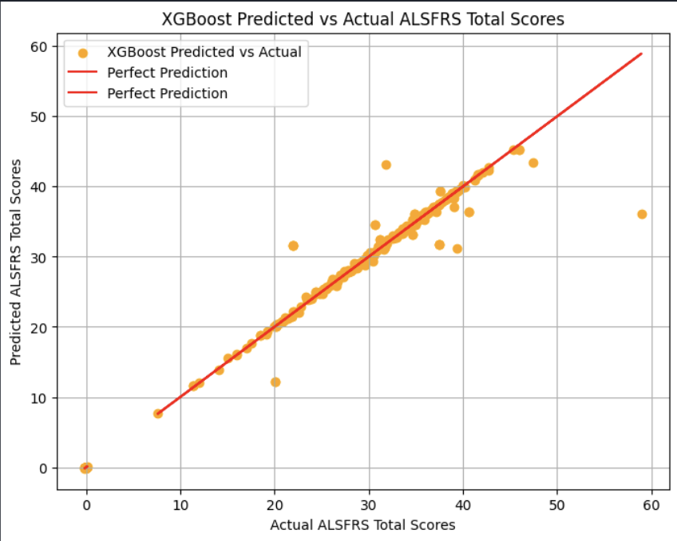

Shelby Fulton
Predicting the Progression of Amyotrophic Lateral Sclerosis Using Deep Learning Models
Inspired by my uncle who passed away from ALS at the end of my sophomore year, I enrolled in the Machine Learning and Algorithms for Medicine Independent Work Seminar during the spring of my junior year. I explored the use of machine learning models to predict the progression of ALS using only three months worth of data. I gained experience in large dataset preprocessing techniques and explored the use of many different models to predict the progression including random forest regressors, feed forward neural networks, and the XGBoost model. Through fine tuning the XGBoost model, I achieved a Pearson Correlation Coefficient of 0.9948 and a root mean squared error value of 1.6816. Comparing my one semester work to other studies that had been conducted with years of work dedicated towards them, I had a higher RMSE, but achieved a higher PCC. Overall, I found it very inspiring to be able to predict the progression of ALS to such a high degree. Applications of machine learning such as this keep me motivated to bring about change to the people's lives using technology.
